Fiches de lecture
Texte documentaire à trous avec banque de mots, compréhension orale par QR code (audio gratuit) et mots mêlés, avec corrigé.
4.272 ressources
Thème
Niveau
Sierra Leone – Fiche CM1-CM2 : texte à trous, compréhension orale et mots mêlés
Choucroute – Fiche CM1-CM2 : texte à trous, compréhension orale et mots mêlés
Rouble – Fiche CM1-CM2 : texte à trous, compréhension orale et mots mêlés
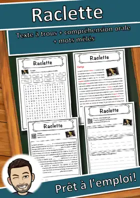
Raclette – Fiche CM1-CM2 : texte à trous, compréhension orale et mots mêlés
Flûte traversière – Fiche CM1-CM2 : texte à trous, compréhension orale et mots mêlés
Praséodyme – Fiche CM1-CM2 : texte à trous, compréhension orale et mots mêlés
Pont – Fiche CM1-CM2 : texte à trous, compréhension orale et mots mêlés
Pied – Fiche CM1-CM2 : texte à trous, compréhension orale et mots mêlés
Niveau de la mer – Fiche CM1-CM2 : texte à trous, compréhension orale et mots mêlés
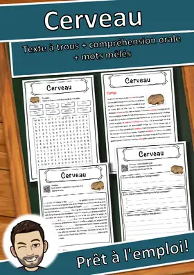
Cerveau – Fiche CM1-CM2 : texte à trous, compréhension orale et mots mêlés
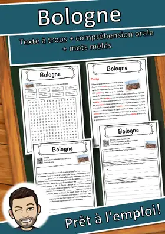
Bologne – Fiche CM1-CM2 : texte à trous, compréhension orale et mots mêlés
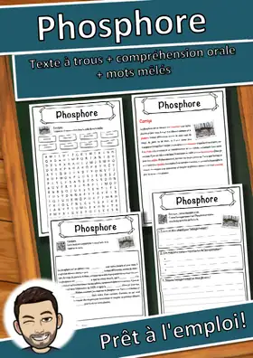
Phosphore – Fiche CM1-CM2 : texte à trous, compréhension orale et mots mêlés
Peuple – Fiche CM1-CM2 : texte à trous, compréhension orale et mots mêlés
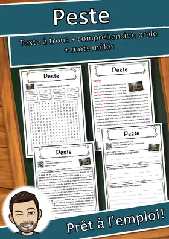
Peste – Fiche CM1-CM2 : texte à trous, compréhension orale et mots mêlés
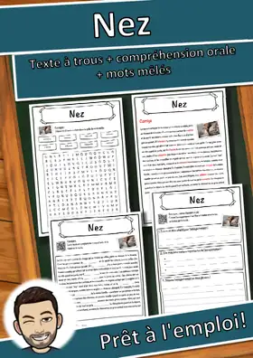
Nez – Fiche CM1-CM2 : texte à trous, compréhension orale et mots mêlés
Monastère – Fiche CM1-CM2 : texte à trous, compréhension orale et mots mêlés
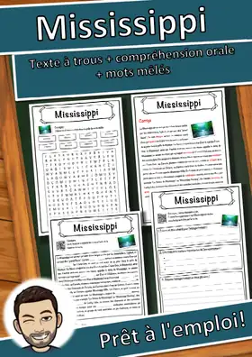
Mississippi – Fiche CM1-CM2 : texte à trous, compréhension orale et mots mêlés
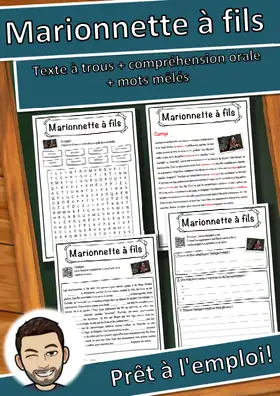
Marionnette à fils – Fiche CM1-CM2 : texte à trous, compréhension orale et mots mêlés
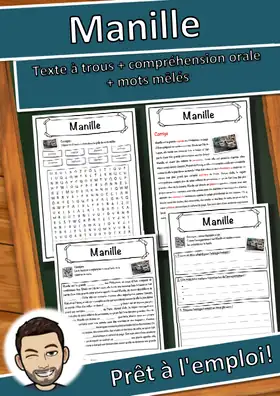
Manille – Fiche CM1-CM2 : texte à trous, compréhension orale et mots mêlés
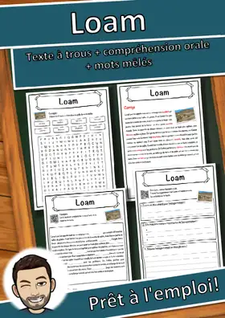
Loam – Fiche CM1-CM2 : texte à trous, compréhension orale et mots mêlés
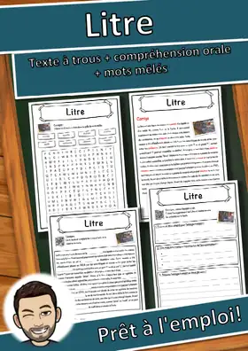
Litre – Fiche CM1-CM2 : texte à trous, compréhension orale et mots mêlés
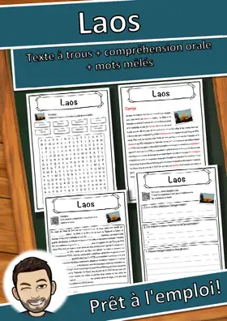
Laos – Fiche CM1-CM2 : texte à trous, compréhension orale et mots mêlés

Lac Baïkal – Fiche CM1-CM2 : texte à trous, compréhension orale et mots mêlés
Iroquois – Fiche CM1-CM2 : texte à trous, compréhension orale et mots mêlés
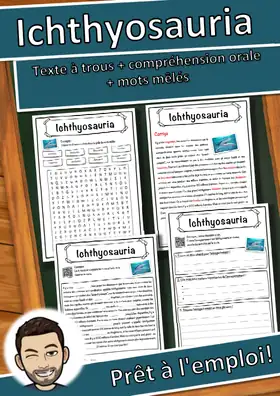
Ichthyosauria – Fiche CM1-CM2 : texte à trous, compréhension orale et mots mêlés
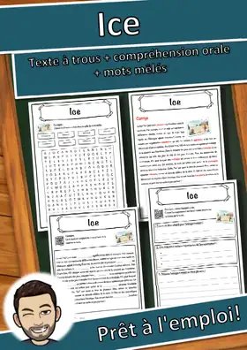
Ice – Fiche CM1-CM2 : texte à trous, compréhension orale et mots mêlés
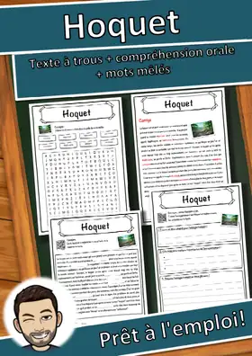
Hoquet – Fiche CM1-CM2 : texte à trous, compréhension orale et mots mêlés
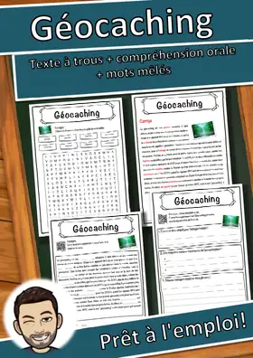
Géocaching – Fiche CM1-CM2 : texte à trous, compréhension orale et mots mêlés
Fée – Fiche CM1-CM2 : texte à trous, compréhension orale et mots mêlés
Empreinte digitale – Fiche CM1-CM2 : texte à trous, compréhension orale et mots mêlés
Empereur – Fiche CM1-CM2 : texte à trous, compréhension orale et mots mêlés
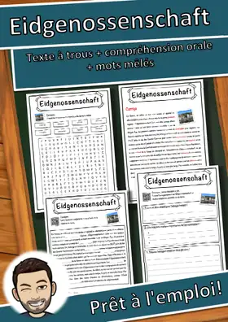
Eidgenossenschaft – Fiche CM1-CM2 : texte à trous, compréhension orale et mots mêlés
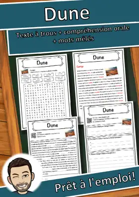
Dune – Fiche CM1-CM2 : texte à trous, compréhension orale et mots mêlés
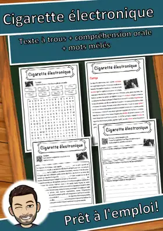
Cigarette électronique – Fiche : texte à trous, compréhension orale et mots mêlés
Chevalier – Fiche : texte à trous, compréhension orale et mots mêlés
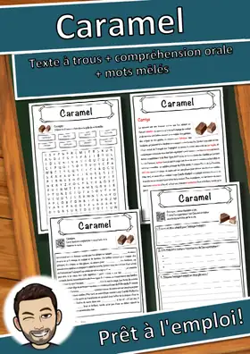
Caramel – Fiche : texte à trous, compréhension orale et mots mêlés
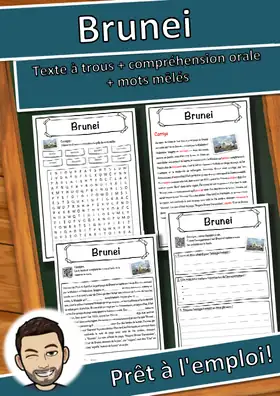
Brunei – Fiche : texte à trous, compréhension orale et mots mêlés
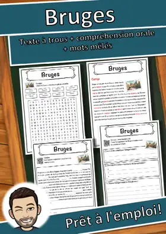
Bruges – Fiche : texte à trous, compréhension orale et mots mêlés
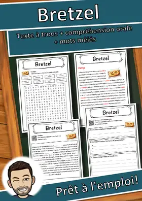
Bretzel – Fiche : texte à trous, compréhension orale et mots mêlés
Botte en caoutchouc – Fiche : texte à trous, compréhension orale et mots mêlés
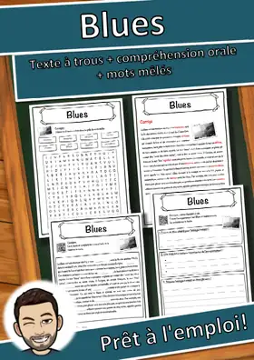
Blues – Fiche : texte à trous, compréhension orale et mots mêlés
Bière – Fiche : texte à trous, compréhension orale et mots mêlés
Bengali – Fiche : texte à trous, compréhension orale et mots mêlés
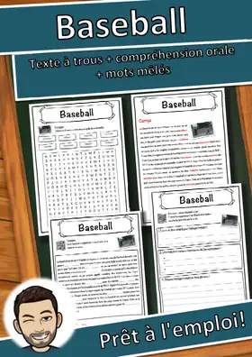
Baseball – Fiche : texte à trous, compréhension orale et mots mêlés
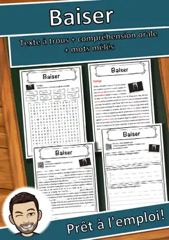
Baiser – Fiche : texte à trous, compréhension orale et mots mêlés
Guépard – Fiche : texte à trous, compréhension orale et mots mêlés
Œil – Fiche : texte à trous, compréhension orale et mots mêlés
Union des républiques socialistes soviétiques – Fiche : texte à trous, compréhension orale et mots mêlés
Aucune ressource trouvée – essaie un autre mot ou un autre filtre.